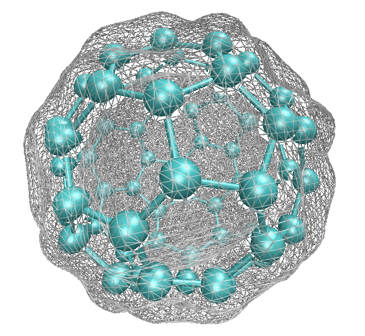

Seminarium przeddyplomowe FT sem.6
Kwantowo-mechaniczna metoda modelowania cząsteczek używana w fizyce, chemii czy badaniach materiałowych. Zakłada ona, że wszystkie własności układu w stanie stacjonarnym są funkcjonałami gęstości elektronowej stanu podstawowego.
Metoda ta używana jest w fizyce ciała stałego już od lat 70' XX w.

Obliczenia DFT "ab initio" pozwalają nam przewidzieć i badać własności cząsteczek na podstawie jedynie danych kwantowo-mechanicznych, nie wymagają one ustalenia innych parametrów przedmiotu badań.
Twierdzenia te są podstawą dla teorii funkcjonału gęstości.
Odnoszą się one do każdego układu w którym elektrony poruszają się pod wpływem zewnętrznego potencjału
Dla niezdegenerowanego stanu podstawowego, energia układu jest jednoznacznie określona przez jego gęstość elektronową.
Gdy oblicza się energię stanu podstawowego dla próbnych gęstości elektronowych, minimum energii występuje dla dokładnej gęstości elektronowej stanu podstawowego.
Inaczej adhezja, atomów, jonów lub molekuł na powierzchni adsorbentu.
Proces ten prowadzi do utworzenia się cienkiej powłoki adsorbatu na na powierzchni adsorbentu.
Nieorganiczny związek soli kwasu siarkowodorowego i molibdenu na IV stopniu utlenienia.
Znalazł zastosowanie w przemyśle jako smar stały dzięki swojej warstwowej budowie krystalicznej przypominającej budowę grafitu.
Jest on diamagnetykiem oraz półprzewodnikiem niesamoistnym, podobnym do krzemu, z przerwą energetyczną równą 1,23eV.
Use a spacebar or arrow keys to navigate.
Press 'P' to launch speaker console.